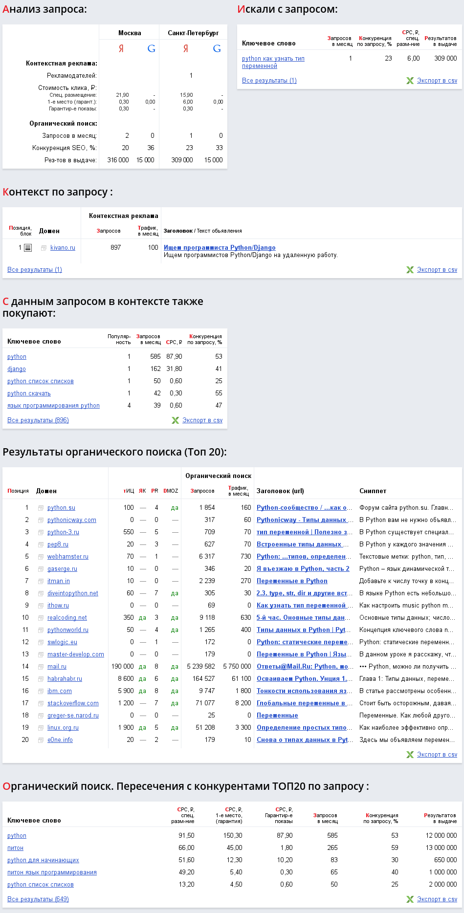

Есть такой аналитический сайт: advodka.com. На этом сайте собрано несколько инструментов для анализа позиций сайта в разных поисковиках.
Вот какой прямой ссылкой можно получить анализ по фразе "python как узнать тип переменной"
В ответ будет представлен анализ, такой как на нижеприведенном рисунке. Анализируется как Яндекс, так и Google. Достаточно информативно:
